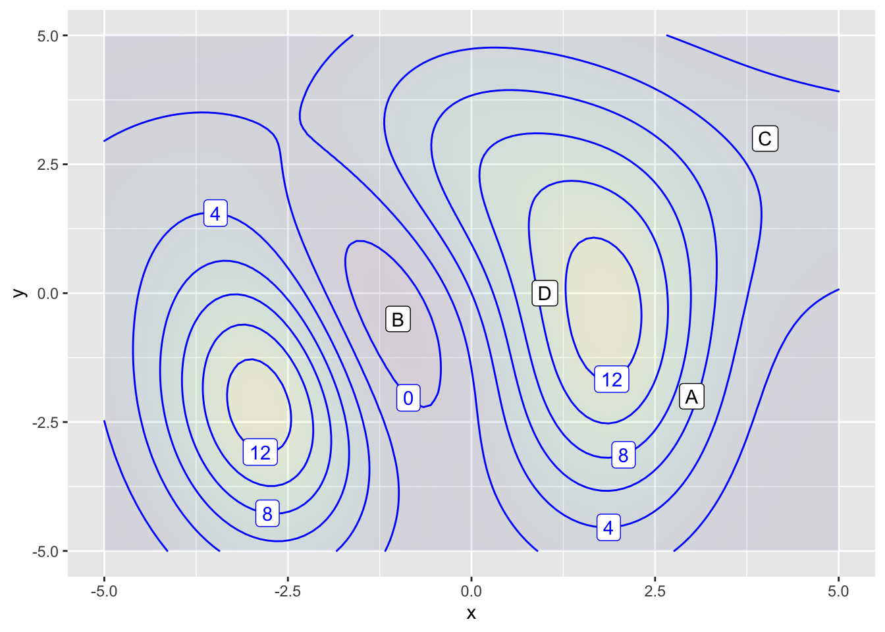
Chap 26 Exercises
\[ \newcommand{\dnorm}{\text{dnorm}} \newcommand{\pnorm}{\text{pnorm}} \newcommand{\recip}{\text{recip}} \]
Files to process
- fox-make-stove.Rmd
Exercise 1 Figure 1 shows a somewhat complex function with two inputs. The labels A, B, C, D mark some possible reference points \((x_0, y_0)\) around which polynomial approximations are being made.
For each of the following graphs, say what kind of two-input polynomial approximation is being made and which reference point the approximation is centered on.
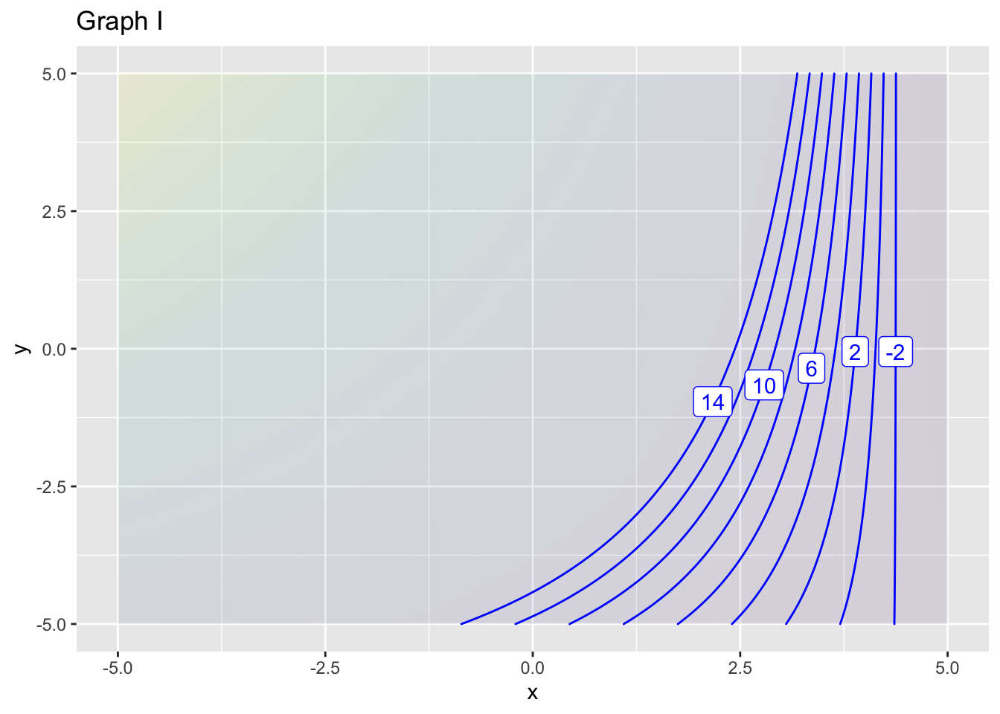
- What is the order of approximation in graph (I)?
constant linear bilinear quadratic
question id: approx-blue-1
- Do some detective work. What is the reference position \((x_0, y_0)\) for approximation in graph (I)?
A B C D
question id: approx-blue-2
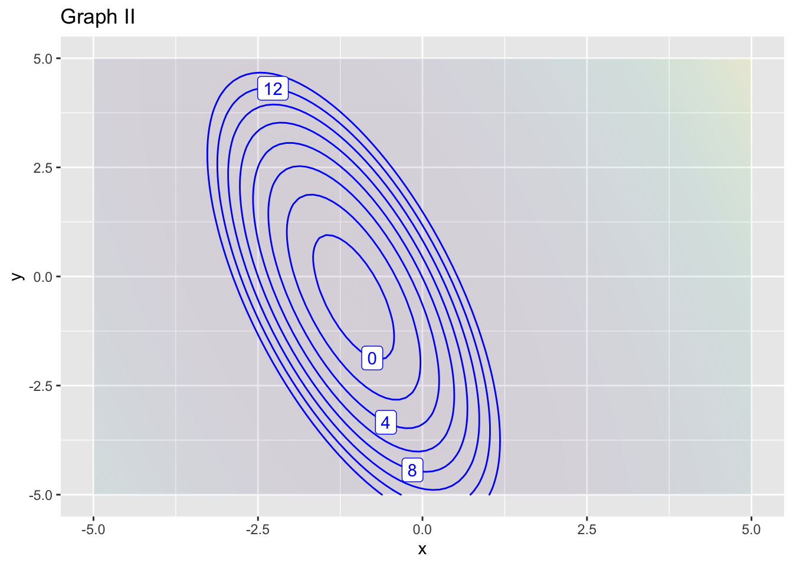
- What order approximation in graph (II)?
constant linear bilinear quadratic
question id: approx-blue-3
- What is the reference position \((x_0, y_0)\) for approximation in graph (II)?
A B C D
question id: approx-blue-4
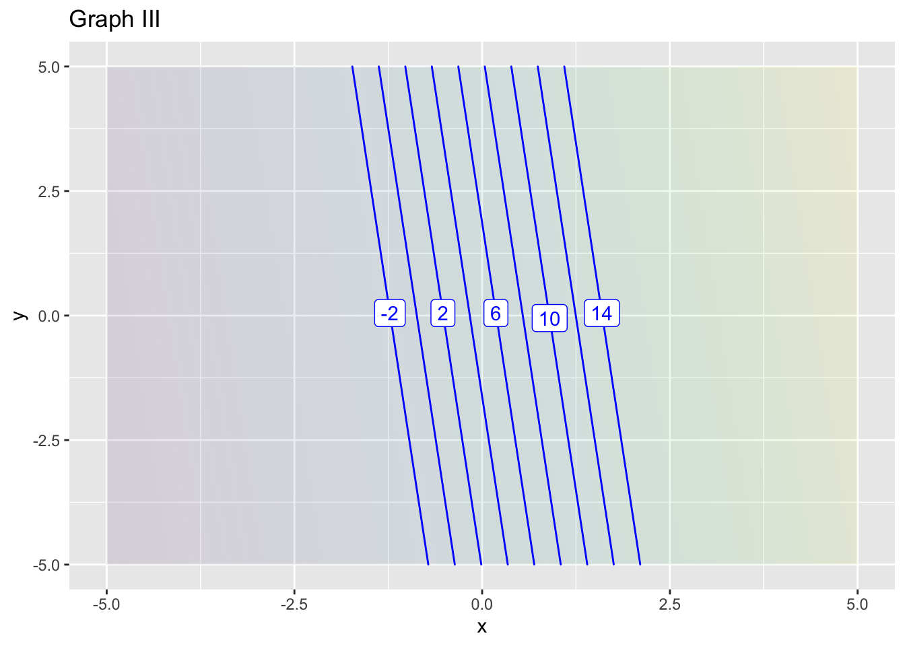
- What order approximation in graph (III)?
constant linear bilinear quadratic
question id: approx-blue-5
- What is the reference position \((x_0, y_0)\) for approximation in graph (III)?
A B C D
question id: approx-blue-6
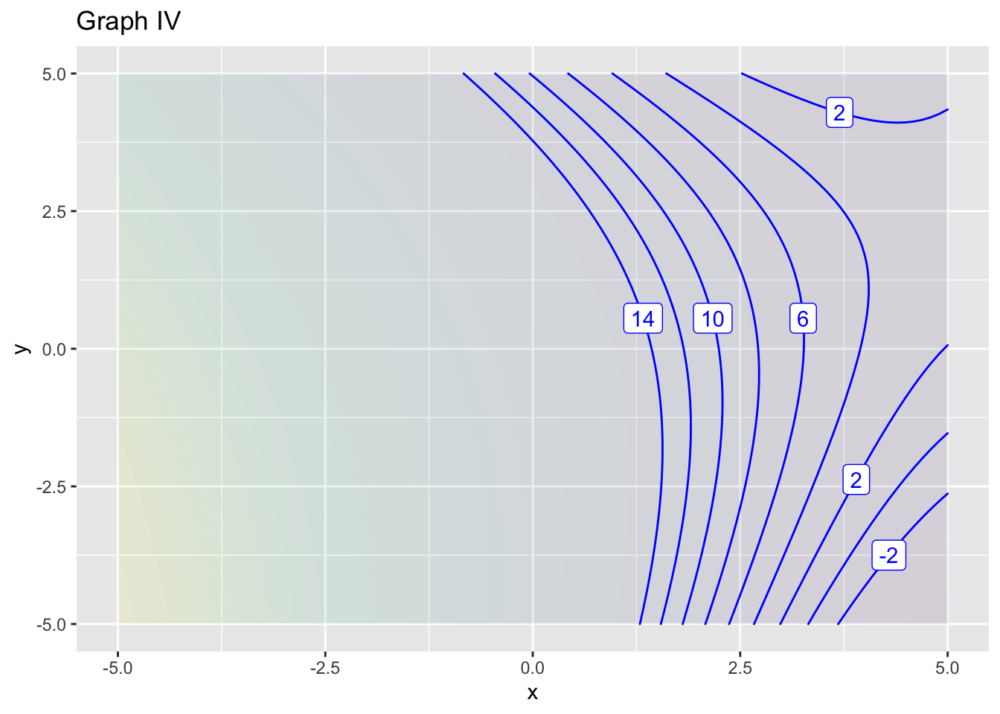
- What order approximation in graph (IV)?
constant linear bilinear quadratic
question id: approx-blue-7
- What is the reference position \((x_0, y_0)\) for approximation in graph (IV)?
A B C D
question id: approx-blue-8
Exercise 2 Figure 2 shows a function \(f(x)\). Five values of \(x\) are labelled A, B, …. These are the possible values of \(x_0\) in the questions.
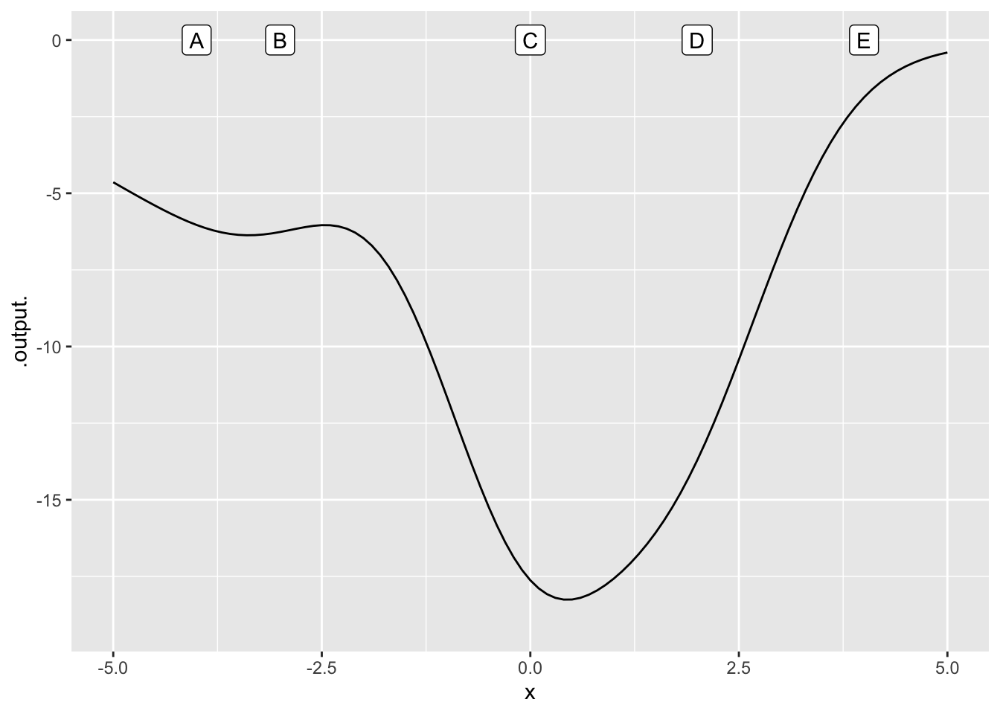
Each of the graphs that follow show an approximation to \(f(x)\) at one of the points A, B, …. in the above graph. The approximations are either constant (“order 0” approximation), linear (“order 1” approximation), quadratic (“order 2” approximation), or something else. For each graph, say what order approximation is being used.
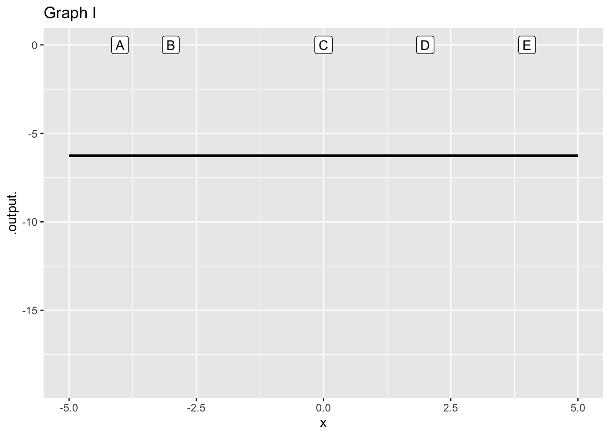
- What order approximation in graph (I)?
constant linear quadratic none of these
question id: approx-orange-1
- What is the reference position \(x_0\) in Figure 2 for the approximation in graph (I)?
A B C D E None of them
question id: approx-orange-2
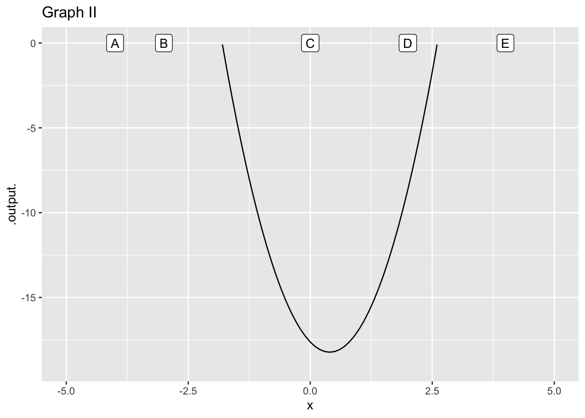
- What order approximation in graph (II)?
constant linear quadratic none of these
question id: approx-orange-3
- What is the reference position \(x_0\) Figure 2 for the approximation in graph (II)?
A B C D E None of them
question id: approx-orange-4
`
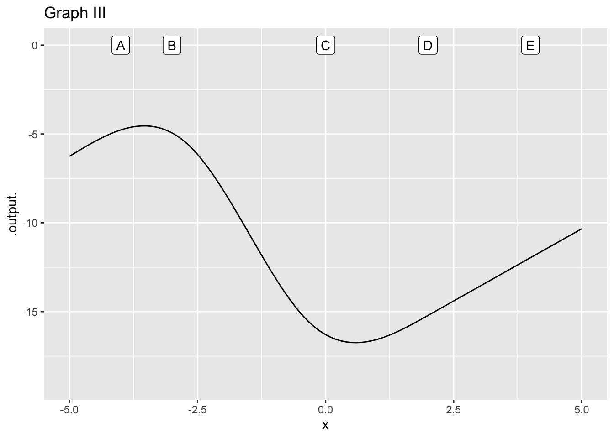
- What order approximation in graph (III)?
constant linear quadratic none of these
question id: approx-orange-5
- What is the reference position \(x_0\) in Figure 2 for the approximation in graph (III)?
A B C D E None of them
question id: approx-orange-6
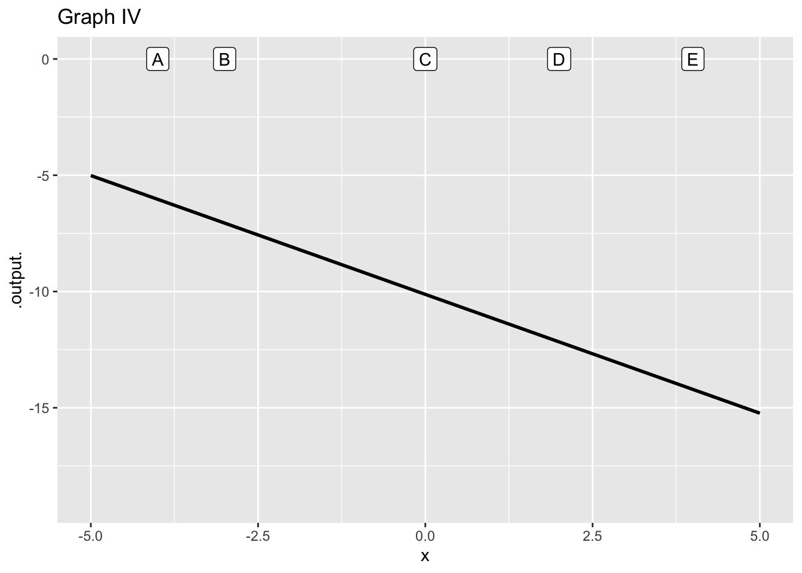
- What order approximation in graph (IV)?
constant linear quadratic none of these
question id: approx-orange-7
- What is the reference position \(x_0\) in Figure 2 for the approximation in graph (IV)?
A B C D E None of them
question id: approx-orange-8
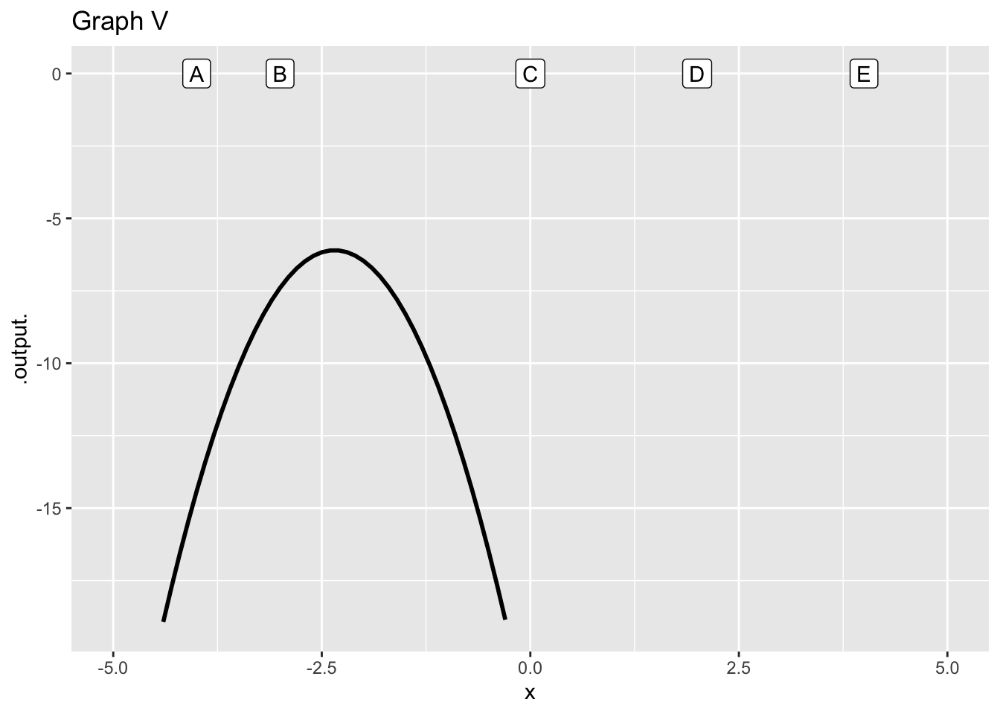
- What order approximation in graph (V)?
constant linear quadratic none of these
question id: approx-orange-9
- What is the reference position \(x_0\) Figure 2 for the approximation in graph (V)?
A B C D E None of them
question id: approx-orange-10
:::
Exercise 3 The Taylor polynomial for \(e^x\) has an especially lovely formula: \[p(x) = 1 + \frac{x}{1!} + \frac{x^2}{2!} + \frac{x^3}{3!} + \frac{x^4}{4!} + \cdots\]
In the above formula, the center \(x_0\) does not appear. Why not?
Having a center is not a requirement for a Taylor polynomial.
There is a center, \(x_0 = 1\), but terms like \(x_0 x^2\) were simplified to \(x^2\).
There is a center, \(x_0 = 0\), but the terms like \((x-x_0)^2\) were algebraically simplified to \(x^2\).
question id: birch-lie-sheet
Exercise 4 In this exercise, you’re going to be looking at the shape of contour lines very close to a reference point. The graph shows which function we will be examining. The contours are unlabeled, to avoid distracting you with numbers; we are interested in shapes. Four different reference points are marked, with these coordinates
| label | x_0_ | y_0_ |
|---|---|---|
| A | -2.100 | 3.000 |
| B | -0.400 | 2.500 |
| C | -1.605 | 1.932 |
| D | 1.265 | -2.725 |

For each of the four points A, B, C, D marked in Figure 3, we want to find the largest region size for which an approximation will be pretty good. What do we mean by “pretty good?” That if you switched to a smaller region size the result would look very much like what you saw at the larger region size.
The R/mosaic code in Active R chunk 1 plots out the function \(g(x, y)\) over a small domain, centered at (x0, y0). The extent of the locale is specified by size. As shown initially, the location corresponds to the point labelled A Figure 3. The size is 1.0.
Looking locally, the function shape is much simpler than it appears globally. You can see this by running the code in Active R chunk 1 which displays the function in a small locale.
Now change size to 0.5, run the code, and observe the shape of the function in this smaller locale. (Ignore the contour labels: just look at the shape of the contours.) If the shape is practically the same as before, we have reason to believe that the larger size was small enough to give a good local approximation. But if the shape is clearly different, the original size was not good enough. Pick a smaller size, 0.1 and check if the shape of the function is similar to what it was at 0.5. If so, 0.5 is small enough to give a good local approximation. If not … pick a still smaller size. Keep going until two consecutive graphs show practically the same shape.
You can use this sequence of sizes, stopping when you have found a size that produces the same visual impression as the previous size.
\[\text{size}: 1.0,\ 0.5,\ 0.1,\ 0.05,\ 0.01,\ 0.005,\ 0.001,\ 0.0005,\ 0.0001\]
Do this separately for each of the 4 locations A, B, C, and D.
1a) For reference point A how small should size be so that the shape of the contours does not differ substantially from the shape at the previous size.
0.1 0.01 0.001 1e-04
question id: approx-tan-1a
Exercise 5 1b) For reference point A which phrase best describes the shape of the contours at the size you found in question (1a).
contours are straight and almost exactly parallel and evenly spaced
contours are straight, almost exactly parallel, but unevenly spaced.
contours are straight, but fan out a bit
contours are curved but concentric and evenly spaced
contours are curved and concentric, but unevenly spaced.
question id: approx-tan-1b
2a) For reference point B how small should size be so that the shape of the contours does not differ substantially from the shape at the previous size.
0.1 0.01 0.001 1e-04
question id: approx-tan-2a
2b) For reference point B which phrase best describes the shape of the contours at the size you found in question (2a).
contours are straight and almost exactly parallel and evenly spaced
contours are straight, almost exactly parallel, but unevenly spaced.
contours are straight, but fan out a bit
contours are curved but concentric and evenly spaced
contours are curved and concentric, but unevenly spaced.
question id: approx-tan-2b
3a) For reference point C how small should size be so that the shape of the contours does not differ substantially from the shape at the previous size.
0.1 0.01 0.001 1e-04
question id: approx-tan-3a
3b) For reference point C, which phrase best describes the shape of the contours at the size you found in question (3a).
contours are straight and almost exactly parallel and evenly spaced
contours are straight, almost exactly parallel, but unevenly spaced.
contours are straight, but fan out a bit
contours are curved but concentric and evenly spaced
contours are curved and concentric, but unevenly spaced.
question id: approx-tan-3b
4a) For reference point D how small should size be so that the shape of the contours does not differ substantially from the shape at the previous size.
0.1 0.01 0.001 0.0001
question id: approx-tan-4a
4b) For reference point D which phrase best describes the shape of the contours at the size you found in question (4a).
contours are straight and almost exactly parallel and evenly spaced
contours are straight, almost exactly parallel, but unevenly spaced.
contours are straight, but fan out a bit
contours are curved but concentric and evenly spaced
contours are curved and concentric, but unevenly spaced.
question id: approx-tan-4b
Exercise 6 Consider the model presented in XREF not implemented yet about the energy expenditure while walking distance \(d\) on a grade \(g\): \[E(d,g) = (a_0 + a_1 g)d\] where \(d\) is the (horizontal equivalent) of the distance walked and \(g\) is the grade of the slope (that is, rise over run).
We want \(E\) to be measured in Joules which has dimension M L\(^2\) T\(^{-2}\). Of course, the dimension of \(d\) is L, that is \([d] = \text{L}\).
- What is the dimension of the parameter \(a_0\)?
dimensionless \(L/T^2\) \(T/L^2\) \(M/T^2\) \(M L/T^2\) \(M/L^2\) \(M/(L^2 T^2)\) \(M L^2 / T^2\)
question id: rooster-pink-1
- What is the dimension of \(g\)? (Hint: \(g\) is the ratio of vertical to horizontal distance covered.)
dimensionless \(L/T^2\) \(T/L^2\) \(M/T^2\) \(M L/T^2\) \(M/L^2\) \(M/(L^2 T^2)\) \(M L^2 / T^2\)
question id: rooster-pink-2
- What is the dimension of the parameter \(a_1\)?
dimensionless \(L/T^2\) \(T/L^2\) \(M/T^2\) \(M L/T^2\) \(M/L^2\) \(M/(L^2 T^2)\) \(M L^2 / T^2\)
question id: rooster-pink-3
Exercise 7 Suppose we describe the spread of an infection in terms of three quantities:
- \(N\) infection rate with respect to time: the number of new infections per day
- \(I\) the current number of people who are infectious, that is, currently capable of spreading the infection
- \(S\) the number of people who are susceptible, that is, currently capable of becoming infectious if exposed to the infection.
All three of these quantities are functions of time. News reports in 2020 such as the one below routinely gave the graph of \(N\) versus time for Covid-19.
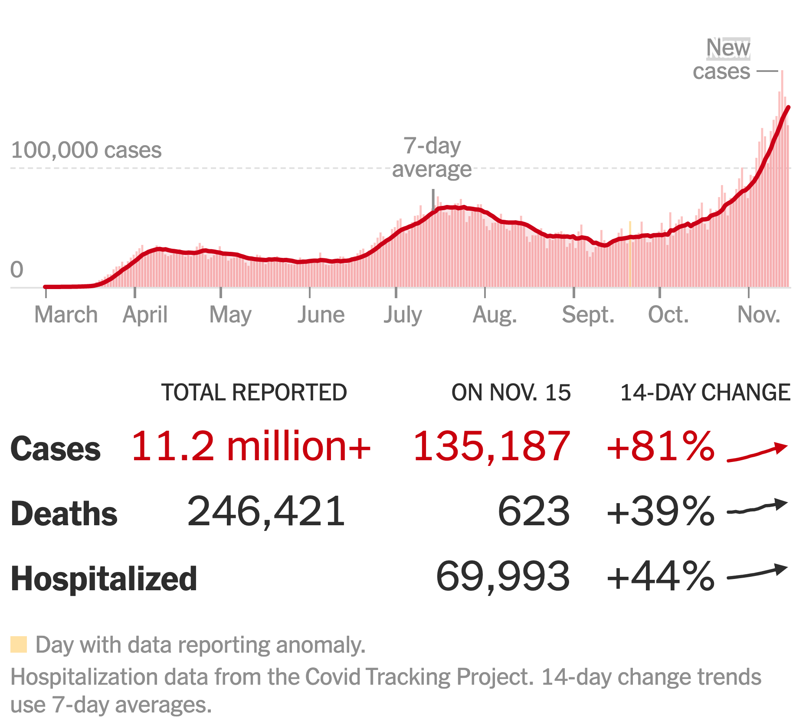
On November 15, 2020, \(N\) was 135,187 people per day. (This is the number of positive tests. The true value of \(N\) was, based on later information, 5-10 times greater.) The news reports don’t usually report \(S\) on a day-by-day basis.
But a basic strategy in modeling with calculus is to take a snapshot: Given \(I\) and \(S\) today, what is a model of \(N\) for today. (Next semester, we will study “differential equations,” which provide a way of assembling from the snapshot model what the time course of the pandemic will look like.)
The low-order polynomial for \(N(S, I)\) is \[N(S,I) = a_0 + a_1 S + a_2 I + a_{12} I S.\] We don’t include quadratic terms because there is no local maximum in \(N(S, I)\)—common sense suggests that \(\partial_S N() \geq 0\) and \(\partial_I N() \geq 0\), whereas a local maximum requires at least one of these derivatives to be negative near the max.
Your job is to figure out which, if any, terms can be safely deleted from the low-order polynomial. A good way to approach this is to figure out, using common sense, what \(N\) would be for either \(S=0\) or \(I=0\). (Note that the previous is not restricted to \(S = I = 0\). Only one of them needs to be zero to produce the relevant result.)
We know that if \(I=0\) there will be no new infections, regardless of how large \(S\) is. We also know that if \(S=0\), there will be no new infections no matter how many people are currently infective. Which of these low-order polynomials correctly represents these two facts? (Assume that all the coefficients in the various polynomials are non-zero.)
\(N(S,I) = a_0 + a_1 S + a_2 I + a_{12} I S\)
\(N(S,I) = a_0 + a_1 S + a_2 I\)
\(N(S,I) = a_1 S + a_2 I + a_{12} I S\)
\(N(S,I) = a_2 I + a_{12} I S\)
\(N(S,I) = a_1 S + a_{12} I S\)
\(N(S,I) = a_{12} I S\)
\(N(S,I) = a_1 S + a_2 I\)
question id: rooster-violet-1
:::
Exercise 8 The “Rule of 72”
For the quantitatively literate, systems showing exponential growth and decay are encountered almost every day and are usually presented as “percent per year” rates. Some examples:
- Money. Credit card interest rates, bank interest rates, student loans. Your credit card might charge you 18% per year, your bank might pay you 0.3% on a savings account, “subsidized” student loans are often around 7%.
- Population. Statistics are often given as “growth rates” in percent. For instance, in 2016-17, Colorado’s population grew by an estimated 1.39% and Idaho by 2.2%. Illinois’s population shrank by 0.26%, and Wyoming’s by 0.47%.
- Prices. Inflation rates are usually presented as percent.
- Home prices and medical costs. These are some of the largest expenses encountered by families and they typically grow. You might hear a statistic like, “Regional median home prices increased by 10% over the last year,” or “Health insurance rates are increasing by 7% this year.”
In understanding the long-term consequences of such growth or decay, it can be helpful to frame the rate of growth not as a percentage, but as a doubling time (or halving time for decay).
Happily, there is an easy formula to approximate doubling (or halving) time directly from the percentage growth (or decay) rate. It is \[n = \frac{\ln(2)}{\ln(1 + r/100)}\] where \(r\) is the percent per year growth rate and \(n\) is the number of years for doubling (or halving).
Could you do this calculation in your head? Perhaps you could carry around a card with a graph for looking up the answer:
doubling_time <- makeFun(log(2) / log(1 + r/100) ~ r)
slice_plot(doubling_time(r) ~ r, bounds(r = c(1,30))) 
It is hard to be very precise in reading off values from such a graph. Instead, maybe we can simplify the formula.
A straight-line calculation is not going to match the doubling-time curve well. How about a quadratic approximation? Let’s make one centered on \(r = 5\). The formula, as for all quadratic approximations will be \[n(r) \approx a + b (r - r_0) + c (r-r_0)^2/2\]
When centering on \(r_0=5\) the value of \(a\) will be doubling_time(5), the value of \(b\) will be dr_doubling_time(5), and the value of \(c\) will be drr_doubling_time(5).
- What’s the numerical value of \(a\)?
10.2 11 11.9 12.9 14.2 15.7 17.7
question id: rule-of-72-1
- Just by looking at the graph of
doubling_time(r)figure out what will be the signs of \(b\) and \(c\). What are they?
\(b\) positive and \(c\) positive \(b\) negative and \(c\) positive \(b\) negative and \(c\) negative \(b\) positive and \(c\) negative
question id: rule-of-72-2
- What’s the numerical value of \(b\)? (Hint: Use the
D()operator to calculate the derivative ofdoubling_time()with respect tor. Then evaluate that function at \(r=5\).)
-3.4 -2.8 -2.3 2.3 2.8 3.4
question id: rule-of-72-3
- What’s the numerical value of \(c\)? (Hint: Again, use
D()to find the 2nd derivative with respect tor. Then evaluate that function at \(r=5\).
-1.11 -0.83 -0.64 0.64 0.83 1.11
question id: rule-of-72-4
Using the numerical values for \(a\), \(b\) and \(c\) that you just calculated, construct the quadratic approximation function and plot it in red on top of the \(n(r)\) function. (Hint: Connect the two slice_plot() commands with a pipe %>%. You can give slice_plot() a color = "orange3" argument.)
- Comparing the actual \(n(r)\) and your quadratic approximation, over what domain of \(r\) do the functions match pretty well? Choose the best of these answers.
\(r \in [3,7]\)
\(r \in [1,6]\)
\(r \in [2, 10]\)
\(r \in [4, 10]\)
question id: rule-of-72-5
What we’ve got with this quadratic approximation constructed from derivatives of \(n(r)\) is hardly very usable. You couldn’t do the calculations in your head and even if you could, the result would have a limited domain of relevance.
Occasionally, there are other simple functions that give a good approximation. The one for interest rates is called the “Rule of 72”. The function is \[n(r) \approx 72 / r\ .\] Plot the Rule of 72 function on top of the actual \(n(r)\).
- Comparing the actual \(n(r)\) and the Rule of 72 function, over what domain of \(r\) do the functions match pretty well? Choose the best of these answers.
\(r \in [1,25]\) \(r \in [3,9]\) \(r \in [4, 15]\) \(r \in [8, 30]\)
question id: rule-of-72-6
- Compare numerically the actual \(n(r)\) and the Rule of 72 function for an interest rate of \(r = 10\) (per year). How many years different are the two answers.
0.007 years 0.07 years 0.7 years 7 years
question id: rule-of-72-7
Exercise 9 (Partial derivatives algebraically) The model we developed for the speed of a bicycle \(V\) as a function of steepness \(s\) of the road and bike gear \(g\) is a second-order polynomial in \(s\) and \(g\) with five terms:
\[V(s, g) = a_0 + a_s s + a_g g + a_{sg} s g + a_{gg}g^2\]
The complete second-order polynomial with two inputs has six terms. Which one is missing in $V(s, g)$
```{mcq}
#| label: daily-digital-33-QA1
#| show_hints: true
1. $a_{ss} s^2$ [ correct hint: Excellent! ]
2. $a_{gg} g^3$ [ hint: That's a third-order term. ]
3. $a_{gg} g^{-2}$ [ hint: The low-order polynomial framework does not include negative powers. ]
4. $a_{g} g$ [ hint: That's in the model! ]
5. $a_{sg} g/s$ [ hint: The low-order polynomial framework does not include negative powers. ]
```Which of these is $\partial_g V(s, g)$?
```{mcq}
#| label: daily-digital-33-QA2
#| show_hints: true
1. $a_{g} + a_{sg} s + 2 a_{gg} g$ [ correct hint: right-o ]
2. $a_0 + a_{g} + a_{sg} s + 2 a_{gg} g$
3. $a_{g} g + a_{sg} g + 2 a_{gg} g$
4. $a_{s} s + a_{sg} gs + a_{gg} g^2$
5. $a_{g} + a_{sg} s + 2 a_{gg}$
```Which of these is $\partial_s V(s, g)$?
```{mcq}
#| label: daily-digital-33-QA3
#| show_hints: true
1. $a_{s} + a_{sg} g$ [ correct hint: Correct ]
2. $a_{g} g + a_{sg} s + 2 a_{ss} s$ [ hint: The function $V(s,g)$ does not have any $a_{ss} g^2$ term. ]
3. $a_{g} g + a_{sg} s + 2 a_{gg} g$ [ hint: There is a $a_{gg} g^2$ term in the model. But that does not contribute anything to $\partial_s V()$ because that term has no dependence on $s$. ]
4. $a_s s + a_{sg} sg$ [ hint: You forgot to differentiate these terms with repect to $s$. ]
```Which of these is $\partial_{sg} V(s, g)$?
```{mcq}
#| label: daily-digital-33-QA4
#| show_hints: true
1. $a_{sg}$ [ correct hint: Right ]
2. $a_{sg} s$
3. $a_{sg} g$
4. $a_{sg} sg$
```Which of these is $\partial_{ss} V(s, g)$?
```{mcq}
#| label: daily-digital-33-QA5
#| show_hints: true
1. $0$ [ correct hint: right-o ]
2. $2a_{ss} s$
3. $a_{ss} s$
4. $2 a_{ss} g$
5. $a_{sg}$
```Bicycling with missing terms
The following code chunk will fit the low-order polynomial model of the bicycle to the data used in class. The results are shown in 4 different ways:
- The coefficients on the model
- A contour plot of the model
- A surface plot of the model
- A slice plot showing speed as a function of gear for three different slopes of road.
You might find some of these displays more useful than others. Feel free to comment out (with a #) the ones that you don’t find useful.
Notice that the “model formula” in the lm() function is
V ~ s + g + I(s*g) + I(g^2)
This expression contains just the input quantities in the model. The lm() function does the work of finding the best coefficients for a linear combination of those terms. In the following questions, you’re going to remove terms (such as + I(s*g) from the model formula) to see what happens to the model. In one of the questions, you will extend the formula with a - 1 (which suppresses the intercept term that is ordinarily included in models).
…
Bicycle_speed <- tibble::tribble(
~ s, ~ g, ~ V,
8, 1, 2,
8, 5, 1,
8, 10,0,
0, 1, 9,
0, 5, 12,
0, 10, 6,
-8, 1, 12,
-8, 5, 16,
-8, 10, 20
)
# fit the model to the data
mod <- lm(V ~ s + g + I(s*g) + I(g^2) , data = Bicycle_speed)
knitr::kable(coef(mod))| x | |
|---|---|
| (Intercept) | 6.7777778 |
| s | -0.5686475 |
| g | 0.9666667 |
| I(s * g) | -0.0691598 |
| I(g^2) | -0.0777778 |
mod_fun <- makeFun(mod) # turn the statistical model into a function
dom <- bounds(s = c(-8, 8), g = c(1, 10))
contour_plot(mod_fun(s, g) ~ s + g, dom)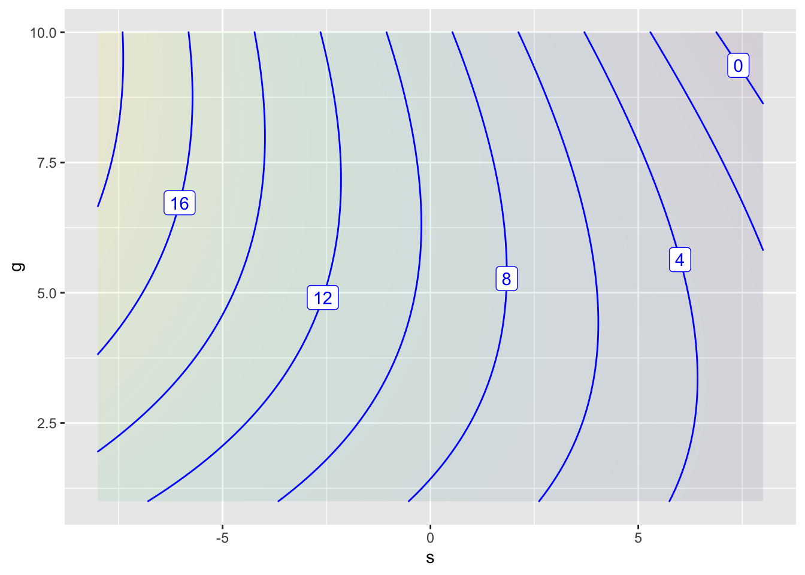
interactive_plot(mod_fun(s, g) ~ s + g, dom)Loading required namespace: plotlyslice_plot(mod_fun(s=0, g) ~ g, bounds(g=c(1,10)),
color = "red", label_text = "flat") %>%
slice_plot(mod_fun(s = -5, g) ~ g, color = "black",
label_text = "downhill") %>%
slice_plot(mod_fun(s = 5, g) ~ g, color = "blue",
label_text = "uphill")%>%
gf_labs(y = "Bike velocity (mph)", x = "Gear #")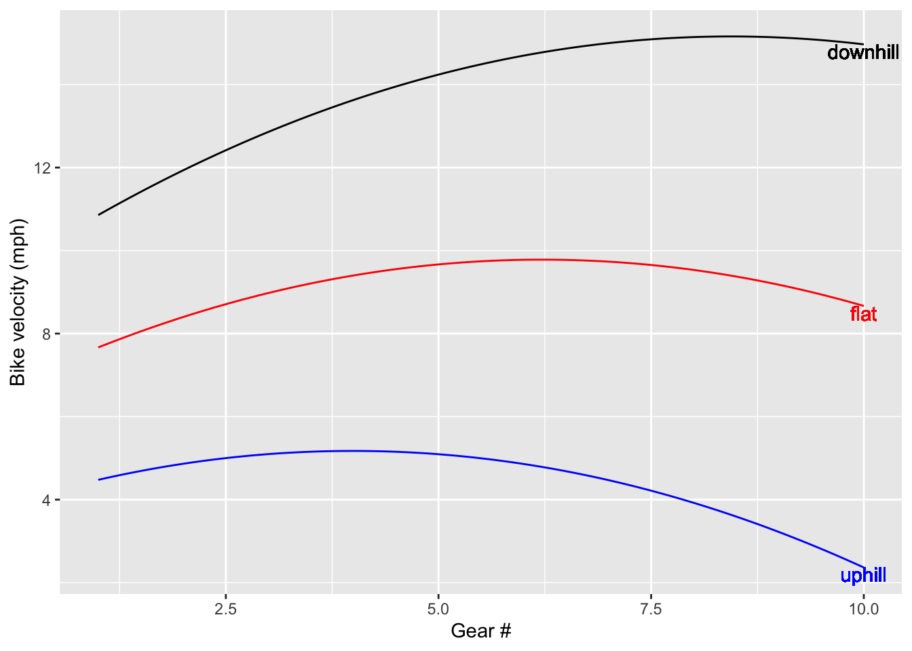
Essay: The
lm()function automatically adds an "intercept" term to the model. You can suppress this by ending the model formula with-1. Explain briefly what happens when you suppress the intercept and to what extent that model makes sense for the bicycle situation.
Restore the sandbox to its original before you answer this question.
Essay: The interaction term in the model is included by the
+ I(s*g)component of the model formula. (Don’t get confused: "Interaction" and "intercept" are completely different things.) Take out the interaction term, refit and re-display the model. Explain briefly what happens when you suppress the interaction term and to what extent that model makes sense for the bicycle situation.
Restore the sandbox to its original before you answer this question.
Essay: Suppose you add in a quadratic term in
sto the model. Explain briefly whether this changes the model a lot or not. Also, look at the coefficients found bylm()for this extended model. What about those coefficients accounts for whether the model changed by a little or a lot.
Restore the sandbox to its original before you answer this question.
Essay: Add a new plot to the code box. It should be just like the slice-plot that was originally there, but instead of each slice holding road slope constant and showing velocity as a function of gear, change things so that gear is held constant and the plot shows velocity as a function of road slope. Explain in everyday terms what this new plot displays about the model and say whether you think it makes sense.
Exercise 10
Still in draft
Fitting polynomials
Taylor polynomials provide a means to approximate continuous and smooth functions around a center \(x_0\). So long as \(x\) is very close to \(x_0\), the approximation will be excellent. But Taylor polynomials aren’t a solution to every problem. Consider the piecewise continuous function, \(ramp(x-1)\), in ?fig-ramp-Taylor.
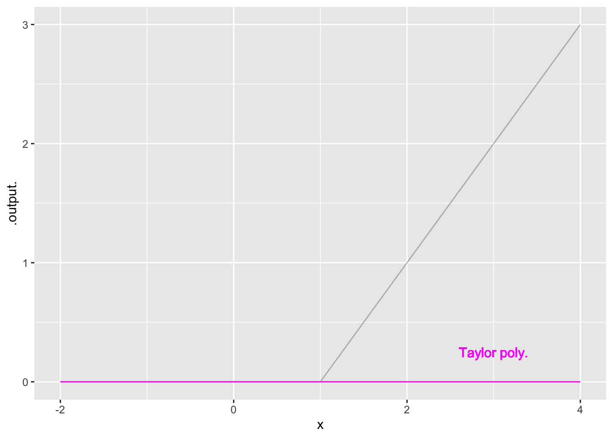
The value of \(ramp(x-1) \left.\Large\right|_{x=0}\) is zero, as is the value of the first, second, third, and every other derivative. Whatever we choose for the order \(n\) of the Taylor polynomial, it will be \(\text{Taylor(x) = 0}\). That is an excellent approximation to \(ramp(x-1)\) around \(x=0\)! But it misses the point of \(ramp()\) entirely.
Or consider the problem that introduced this chapter: finding an arithmetic process to evaluate \(\sin(x)\). As it happens, we only need to be able to evaluate \(\sin(x)\) on the interval \(0 \leq x \leq \pi/2\).^[If \(x\) is outside this range, add or subtract a multiple \(k \in [\ldots, -2, -1, 0, 1, 2, \ldots]\) of \(\pi\) so \(0 \leq x - k \pi \leq \pi\). Then, if \(\pi/2 \leq (x - k \pi)\), calculate \(\sin(\pi - (x - k \pi))\)
FIT TO PART OF SINE
Pts <- tibble(x = seq(0, pi/2, length=1000), y = sin(x))
mod <- lm(y ~ x + I(x*x) + I(x*x*x) - 1, data = Pts)
mod
Call:
lm(formula = y ~ x + I(x * x) + I(x * x * x) - 1, data = Pts)
Coefficients:
x I(x * x) I(x * x * x)
1.01642 -0.05629 -0.11892 fmod <- makeFun(mod)
slice_plot(sin(x) ~ x, bounds(x=c(0, pi/2)), size=3, alpha=0.25) %>%
slice_plot(fmod(x) ~ x, color="magenta")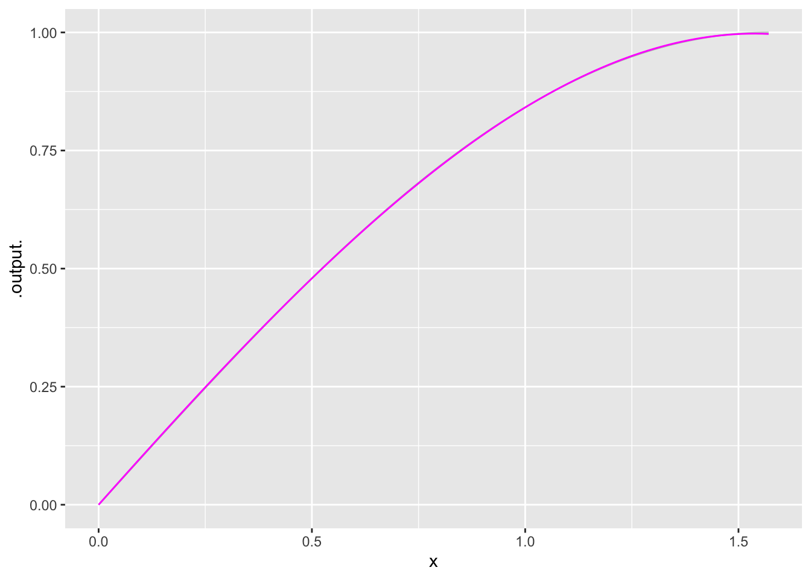
slice_plot(sin(x) - fmod(x) ~ x, bounds(x=c(0, pi/2))) %>%
slice_plot(sin(x) - (x - x^3/6) ~ x, color="green")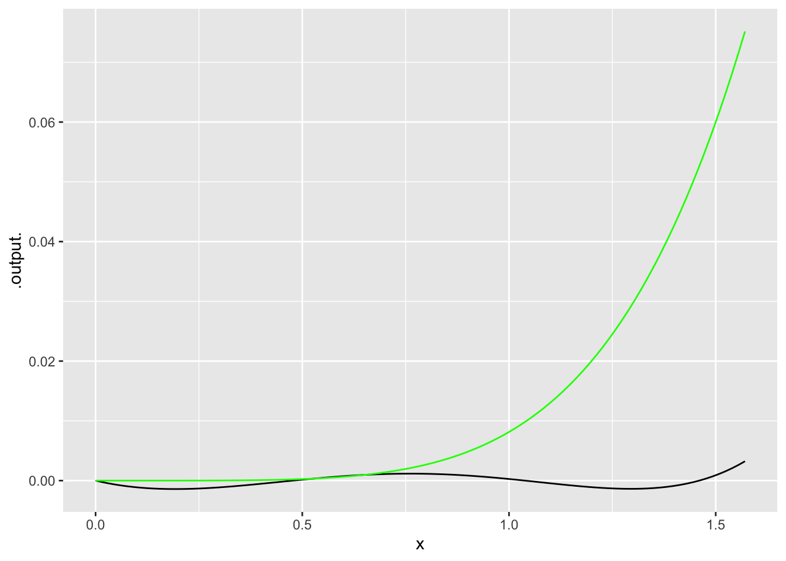
No answers yet collected